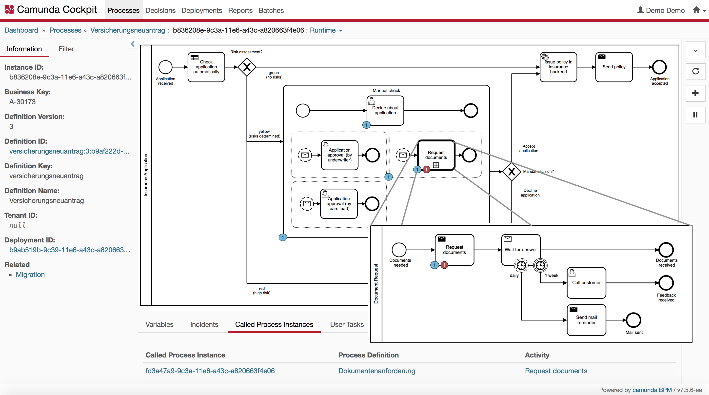
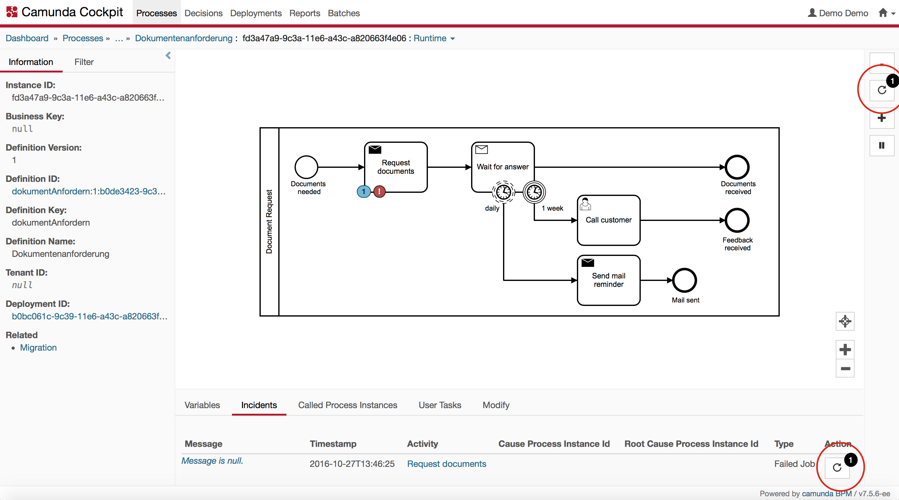
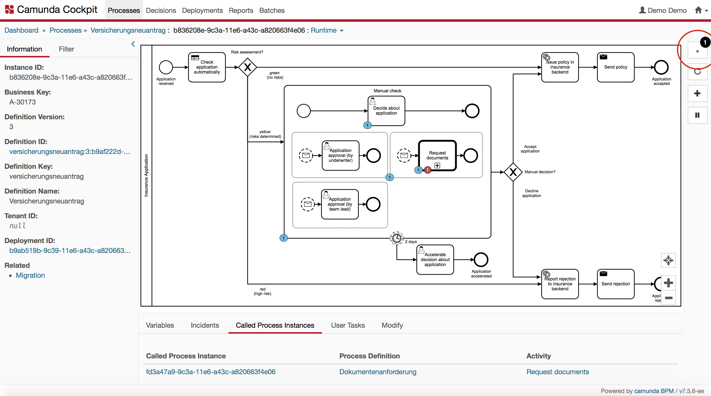

Operating Camunda 7
To successfully operate Camunda 7.x, you need to take into account operation requirements when modeling business processes. Use your existing tools and infrastructure for technical monitoring and alarming. When appropriate, use Camunda Cockpit and consider extending it with plugins instead of writing your own tooling.
This best practice targets Camunda 7.x only! The Camunda 8 stacks differs and operating it is discussed in Camunda 8 Self-Managed.
Installing Camunda 7.x
For a quick start, especially during development, follow our greenfield recommendation for Camunda 7.
For production usage we recommend setting up the container of your choice yourself, as we do not make sure we always ship the latest stable patched container version in our distribution. Additionally, we cannot ship some containers for licensing reasons. Install Camunda into this container following the installation guide. Add required JDBC drivers for the database of your choice and configure data sources accordingly. Make sure to secure Camunda if required.
We recommend to script the installation process, to allow for an automated installation. Typical steps include:
- Set up (or extract) the container and install Camunda into it. As an alternative, you might use the Camunda distribution and remove the example application.
- Add JDBC drivers and configure the data source for Camunda.
- Configure identity management (e.g. to use LDAP) or add required users and groups to the database-based identity management.
- Set up Maven build for Camunda webapp in case you want to add your own plugins or customizations.
- Install the Camunda license.
To script the installation, you can retrieve all required artifacts also from our Maven repositories. This way, it is easy to switch to new Camunda versions. Integrate all pieces by leveraging a scripted configuration management and server automation tool such as Docker, Puppet, Chef, or Ansible.
Setting up monitoring and alarming
Certain situations have to be recognized quickly in order to take appropriate action during the runtime of the system. Therefore, consider monitoring and alarming up front when planning for production operations.
Distinguish between process execution-related monitoring and basic systems monitoring. Do systems monitoring via normal Java or Container Tools - nothing Camunda specific is needed in that area.
Recognizing and managing incidents
In case a service call initiated by Camunda fails, a retry strategy will be used. By default, a service task is retried three times. Learn more about retrying failed transactions with your custom retry strategy.
In case the problem persists after those retries, an incident is created and Camunda will not recover without intervention from a human operator. Therefore, make sure somebody is notified whenever there are any (new) incidents.
You can build an active solution, where Camunda actively notifies somebody when there is a new incident. For example, you could send an email or create a user task in Camunda. To achieve this, you can hook in your own incident handler as shown in this example. The upside is that sending emails like this is very easy, the downside is that you have to implement Camunda specific classes.
However, if a crucial system goes down you might end up spamming people with thousands of process instances running into the same incident.
This is why typically a passive solution is preferred, which queries for (new) incidents from the outside, leveraging the Camunda (Java or REST) API and taking the desired action. The most common way is to query the number of incidents by the tool of your choice using the REST API: GET incident/count. More information can be found in the REST API. We prefer the REST API over more low level technologies (like JMX or PMI), as this typically works best in any environment.
Now you can easily batch multiple incidents into one email or delegate alarming to existing tools like Nagios or Icinga. An additional advantage is that you eventually already have proper alarming groups defined in such a tool.
Monitoring performance indicators
Monitor the following typical performance indicators over all process definitions at once:
- Number of open executable jobs:
GET /job/count?executable=true(REST API), as these are jobs that should be executed, but are not yet. - Number of open incidents:
GET /incident/count(REST API), as somebody has to manually clear incidents and increasing numbers point to problems. - Number of running process instances:
GET /process-instance/count(REST API). Increasing numbers might be a trigger to check the reasons, even if it can be perfectly fine (e.g. increased business).
If you want to monitor process definition-specific performance indicators, you can either iterate over the process definitions - e.g. by using GET /process-definition/{id}/statistics (REST API), or leverage GET /process-definition/statistics (REST API), which groups overall performance indicators by process definitions. Beware that you eventually need to take into account older versions of process definitions, too.
Organizing dedicated teams for monitoring
In general, the performance indicators mentioned above can and should be monitored generically and independent of specific process applications. However, you may want to set up dedicated alarming for different operating teams with more knowledge about specific process application characteristics. For example, one of those teams might already know what the typical number of open user tasks for a certain process definition is during normal runtime. There are two approaches to achieve this:
The recommended approach is to configure dedicated alarming directly in your monitoring tool by creating separate monitoring jobs querying the performance indicators for specific process definitions. This approach does not need any operation centric adjustments in Camunda and is easy to set up and handle.
An alternative approach is to define team-specific bundles of process definitions in Camunda by leveraging the process definition "category" or even your own BPMN extension elements. However, this information cannot be directly used in the queries mentioned above. Hence, you have to implement additional logic to do so. We typically advise that you do not do so unless you have very good reasons to invest the effort.
Creating your own alarming mechanism
In case you do not have a monitoring and alarming tool or cannot create new jobs there, build an easy alarming scheduler yourself. This could be a Java component called every couple of minutes to query the current performance indicators by Java API generating custom emails afterwards.
public void scheduledCheck() {
// Query for incidents
List<Incident> incidents = processEngine.getRuntimeService()
.createIncidentQuery().list();
// Prepare mailing text
String emailContent = "There are " + incidents.size() + " incidents:<br>";
for (Incident incident : incidents) {
emailContent += "<a href=\""
+ cockpitBaseUrl
+ incident.getId() + "\">"
+ incident.getIncidentMessage() + "</a><br>";
}
emailContent += "Please have a look into Camunda Cockpit for details.";
// Send mailing, e.g. via SimpleMail
sendEmail(emailContent);
}
Defining custom service level agreements
Apart from generic monitoring, you might want to define business oriented service level agreements (SLAs) for very specific aspects of your processes, like for instance, overdue tasks, missed deadlines or similar. You can achieve that by:
- Adding custom extension attributes in your BPMN process definition, e.g. for specific tasks, message events, etc., which serve to define your specific business performance indicators.
- Reading deployed process definitions and their custom extension attributes, e.g. by means of Camunda's BPMN Model API and interpreting their meaning for your business performance indicators, e.g. by calculating deadlines for tasks.
- Querying for (e.g. task or other) instances within/without the borders of your service level agreement.
This is normally implemented similar to the Java Scheduler we described above.
Intervening with human operator actions
Handling incidents
Incidents are ultimately failed jobs, for which no automatic recovery can take place anymore. Hence, a human operator has to deal with incidents. Check for incidents within Camunda Cockpit and take action there. You might, for example, want to:
- Edit process variables.
- Modify the process instance ("move" the tokens).
- Trigger additional retries.
Camunda Enterprise Edition offers a bulk retry feature allowing you to retry jobs which failed for a common reason (e.g. a remote system being down for a longer time) with a single human operator action.
If you have a failing call activity in your process, you retry "bottom-up" (in the failing subprocess instance), but you cancel "top-down" (the parent process instance to be canceled). Consider the following example incident visualized in Camunda Cockpit.

You eventually observe the incident first on the parent process call activity Request documents, but it is actually caused by the failing activity Request documents in the subprocess. For better comprehensibility, this is directly visualized in the picture above. In Cockpit, you can navigate to the call activity in the called process instance pane to the bottom of the screen. There you could now retry the failing step of the subprocess instance:

1By clicking on this button, you can retry the failing step of the subprocess instance. Note that a successful retry will also resolve the incident you observe on the parent process instance.
On the other hand, you might also want to cancel the failing parent process instance:

1By clicking on this button, you can cancel the failing parent process instance. The cancellation will also cancel the subprocess instances running in the scope of the parent process instance.
Turning on/off all job execution
Sometimes you might want to prevent jobs being executed at all. When starting up a cluster, for example, you might want to turn off the job executor and start it up later manually when everything is up and running.
- Configure the jobExecutorActivate property to
false. - Start the job executor manually by writing a piece of Java code and making it accessible, e.g. via a REST API:
@POST
public void startJobExecutor() {
((ProcessEngineConfigurationImpl) processEngine
.getProcessEngineConfiguration())
.getJobExecutor()
.start();
}
A similar piece of code can be implemented to allow to stop the job executor.
Suspending specific service calls
When you want to avoid certain services to be called because they are down or faulty, you can suspend the corresponding job definitions, either using Cockpit or using an API (Java or REST).
By using the API, you can even automate suspension, e.g. by monitoring and recognizing when a target system goes down. By using naming conventions and accordingly customized job definition queries, you can then find all job definitions for that target system (e.g. "SAP") and suspend them until the target system goes up again.
Suspending whole processes
Sometimes, you may want an emergency stop for a specific process instance or all process instances of a specific process definition, because something behaves strange. Suspend it using Cockpit or using an API (Java or REST) until you have clarified what's going on.
Create backups
- Camunda stores all state information in its database. Therefore, backup your database by means of your database vendors tools or your favorite tools.
- The Camunda container installation, as well as the process application deployments, are fully static from the point of view of Camunda. Instead of backing up this data, we recommend doing a script-based, automated installation of containers, as well as process applications in order to recover easily in case anything goes wrong.
Updating Camunda
For updating Camunda to a new version, follow the guide for patch level updates or one of the dedicated minor version update guides provided for each minor version release.
A rolling update feature has been introduced in version 7.6. This allows users to update Camunda without having to stop the system. Outdated engine versions are able to continue to access an already updated database, allowing updates to clustered application servers one by one, without any downtime.
Preparation
- Before touching the servers, all unit tests should be executed with the desired Camunda version.
- Check running processes in Cockpit
- Handle open incidents
- Cancel undesired process instances if any
- Make a backup (refer above)
Rollout
-
Shut down all application server(s) (unless performing a rolling update in which only one cluster node is taken down at a time after the database has been updated).
-
Update database using SQL scripts provided in the distro (all distros contain the same scripts)
- Ensure you also execute all patch level scripts
- Run all update scripts
- To check which version is in the database, check for missing tables, indexes, or columns from the update scripts
SELECT TABLE_NAME, INDEX_NAME FROM SYS.USER_INDEXES WHERE INDEX_NAME like 'ACT_IDX_%' ORDER BY TABLE_NAME, INDEX_NAME;
SELECT TABLE_NAME FROM SYS.USER_TABLES WHERE TABLE_NAME LIKE 'ACT_%' ORDER BY TABLE_NAME;
- Update applications and application server(s) or container(s)
- Start application server(s) or container(s)
- Check logfile for exceptions
- Check Cockpit for incidents
- Test application using UI or API
- Repeat in all stages